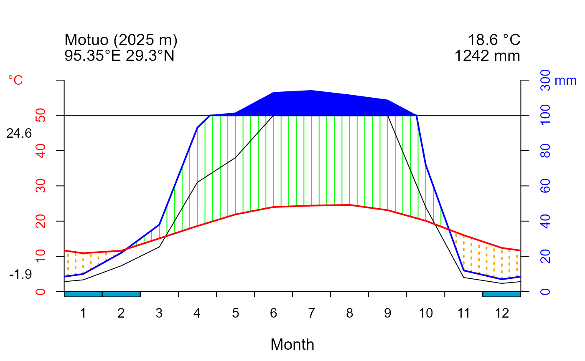

Facilitate and tailor Walter & Lieth climatic diagram drawing
Auman Chan, PhD Candidate
2023-07-23
Source:vignettes/climplot_Intro.Rmd
climplot_Intro.Rmd
climplot aims to collect crucial climate data for global locations and draw the Walter & Lieth climatic diagrams in a more user-friendly and personalized manner.
The main features of the package are:
- The use of worldwide climate data to obtain standardized and reliable data for drawing Walter & Lieth climatic diagrams
- The provision for more parameter to customize the plots and display comprehensive information
The package offers functions for:
- Obtain climate data to draw Walter & Lieth Climatic Diagram for global locations
- Draw the Walter & Lieth climatic diagram
- Revise the color scheme and information presentation of the diagram
Installing and loading
To install the latest developmental version from github and gitee, you will need the R packages remotes and git2r. If you want
to install the vignettes of this package, please add
build_vignettes= TRUE.
install.packages('remotes')
#from github
remotes::install_github("auman-chan/climplot")
#from gitee
install.packages('git2r')
remotes::install_git("https://gitee.com/auman-chan/climplot.git")
#add vignettes
remotes::install_github("auman-chan/climplot",build_vignettes= TRUE)
remotes::install_git("https://gitee.com/auman-chan/climplot.git",
build_vignettes= TRUE)
#add vignettes
remotes::install_github("auman-chan/climplot",build_vignettes= TRUE)
remotes::install_git("https://gitee.com/auman-chan/climplot.git",
build_vignettes= TRUE)Plotting data extraction
The task of searching for and processing climate data from multiple
locations is a challenging endeavor. Function clim_extract
can retrieve data from Worldclim Historical monthly weather data in
2010-2019 (Version of 2.5 minutes, https://worldclim.org/data/monthlywth.html), which are
used for diagrams visualization.
Data preparation
Climate data download
The climate data provided by Worldclim is indispensable. however, due to its global-scale raster layer format, the file size are substantial and cannot be accommodated within the package. Therefore, kindly obtain the climate dataset from Figshare before use.
The dataset comprises of four folders and a total of 48 .tif files, which include annual average minimum temperature, annual average maximum temperature, annual average precipitation, and annual extreme minimum temperature. These values are calculated by taking the monthly averages and minimizations within 2010-2019. The structure of the dataset is illustrated in the table below:
| X | annual_average_maximum_temperature | annual_average_minimum_temperature | annual_average_precipitation | annual_extreme_minimum_temperature |
|---|---|---|---|---|
| 1 | tmax_01.tif | tmin_01.tif | prec_01.tif | extmin_01.tif |
| 2 | tmax_02.tif | tmin_02.tif | prec_02.tif | extmin_02.tif |
| 3 | tmax_03.tif | tmin_03.tif | prec_03.tif | extmin_03.tif |
| 4 | tmax_04.tif | tmin_04.tif | prec_04.tif | extmin_04.tif |
| 5 | tmax_05.tif | tmin_05.tif | prec_05.tif | extmin_05.tif |
| 6 | tmax_06.tif | tmin_06.tif | prec_06.tif | extmin_06.tif |
| 7 | tmax_07.tif | tmin_07.tif | prec_07.tif | extmin_07.tif |
| 8 | tmax_08.tif | tmin_08.tif | prec_08.tif | extmin_08.tif |
| 9 | tmax_09.tif | tmin_09.tif | prec_09.tif | extmin_09.tif |
| 10 | tmax_10.tif | tmin_10.tif | prec_10.tif | extmin_10.tif |
| 11 | tmax_11.tif | tmin_11.tif | prec_11.tif | extmin_11.tif |
| 12 | tmax_12.tif | tmin_12.tif | prec_12.tif | extmin_12.tif |
Location information preparation
In order to extract climate data for specific locations, precise
coordinates are essential. Additionally, the diagram should display
other relevant information such as location names and altitudes.
Therefore, a data.frame containing information of the target locations
is necessary for clim_extract. The imported data.frame must
contain five columns in the following order:
- No: Serial number of the locations
- location: Abbreviation of the locations
- lon: Longitude of the locations in decimal digit (negative numbers indicating west longitude)
- lat: Latitude of the locations in decimal digit (negative numbers indicating south latitude)
- altitude: Altitude of the locations
The data locdata in this package can be an example of
the import data.frame. Other extra columns with information is allowed
behind the columns above, but would be discarded in following
process.
| No | location | lon | lat | altitude | name |
|---|---|---|---|---|---|
| 1 | Motuo | 95.3536 | 29.30420 | 2025 | 墨脱县仁钦崩寺 |
| 2 | Wulianshan | 100.5000 | 24.50000 | 1301 | 无量山自然保护区 |
| 3 | Wawushan | 102.9167 | 29.50000 | 2082 | 四川省眉山市洪雅县瓦屋山 |
| 4 | Leibo | 103.4667 | 28.45000 | 1204 | 四川省凉山州雷波县 |
| 5 | Longcanggou | 102.8333 | 29.61667 | 1764 | 四川省雅安市荥经县龙苍沟国家森林公园 |
| 6 | Jinfoshan | 107.1933 | 29.00017 | 1917 | 重庆市南川区金佛山国家级自然保护区 |
| 7 | Xishui | 106.4667 | 28.30000 | 863 | 贵州省习水良村镇羊化村 |
| 8 | Tonglingshan | 119.8598 | 27.82128 | 724 | 浙江省铜铃山国家森林公园 |
| 9 | Qinglongshan | 112.5341 | 23.17020 | 320 | 广东省鼎湖山自然保护区的百丈岭、青龙山 |
| 10 | Tiantongshan | 121.7855 | 29.80710 | 199 | 浙江省天童山 |
Extraction of climate data
After preparing the climate dataset and location information, import the data.frame and path of three climate datasets, this function will export a data.frame.
#Modify the path of yours
a <- "G:/climplot/climdata/tmin"
b <- "G:/climplot/climdata/tmax"
c <- "G:/climplot/climdata/prec"
#extraction of climate data
plotdata <- clim_extract(locdata, a, b, c)| No | Altitude | Location | Lon | Lat | Type | 1 | 2 | 3 | 4 | 5 | 6 | 7 | 8 | 9 | 10 | 11 | 12 |
|---|---|---|---|---|---|---|---|---|---|---|---|---|---|---|---|---|---|
| 1 | 2025 | Motuo | 95.3536 | 29.30420 | precipitation | 10.10 | 20.960001 | 44.85 | 98.94 | 136.67 | 232.45 | 243.60 | 204.74 | 207.16 | 74.80 | 9.20 | 5.19 |
| 1 | 2025 | Motuo | 95.3536 | 29.30420 | min.temprature | -1.10 | 0.600000 | 3.70 | 7.20 | 11.20 | 13.70 | 14.90 | 14.60 | 14.10 | 9.90 | 3.70 | 0.60 |
| 1 | 2025 | Motuo | 95.3536 | 29.30420 | max.temprature | 12.30 | 13.800000 | 16.50 | 19.20 | 22.70 | 25.10 | 25.50 | 26.10 | 24.00 | 20.80 | 17.60 | 14.10 |
| 2 | 1301 | Wulianshan | 100.5000 | 24.50000 | precipitation | 17.95 | 7.160000 | 20.38 | 37.63 | 60.43 | 158.30 | 203.94 | 187.86 | 120.89 | 103.53 | 23.70 | 26.15 |
| 2 | 1301 | Wulianshan | 100.5000 | 24.50000 | min.temprature | 6.80 | 8.500000 | 11.80 | 15.20 | 18.20 | 20.20 | 20.80 | 20.30 | 19.40 | 16.40 | 11.70 | 8.00 |
| 2 | 1301 | Wulianshan | 100.5000 | 24.50000 | max.temprature | 21.00 | 24.100000 | 26.70 | 29.00 | 30.10 | 29.00 | 28.40 | 29.00 | 27.80 | 25.30 | 23.30 | 19.90 |
| 3 | 2082 | Wawushan | 102.9167 | 29.50000 | precipitation | 7.88 | 8.520001 | 24.04 | 59.87 | 100.53 | 195.40 | 180.20 | 164.01 | 163.07 | 62.63 | 15.26 | 11.20 |
| 3 | 2082 | Wawushan | 102.9167 | 29.50000 | min.temprature | -5.20 | -3.600000 | 0.00 | 4.30 | 7.70 | 10.80 | 13.70 | 13.40 | 10.30 | 5.40 | 1.00 | -3.30 |
| 3 | 2082 | Wawushan | 102.9167 | 29.50000 | max.temprature | 4.00 | 6.100000 | 10.40 | 14.70 | 17.20 | 18.60 | 21.00 | 21.10 | 16.40 | 12.60 | 9.50 | 5.00 |
| 4 | 1204 | Leibo | 103.4667 | 28.45000 | precipitation | 9.54 | 9.820000 | 24.87 | 59.40 | 90.11 | 183.75 | 167.23 | 186.87 | 135.90 | 63.48 | 16.81 | 13.19 |
| 4 | 1204 | Leibo | 103.4667 | 28.45000 | min.temprature | -1.10 | 0.400000 | 4.80 | 9.30 | 12.80 | 15.60 | 18.20 | 17.70 | 14.70 | 10.10 | 5.00 | 0.30 |
| 4 | 1204 | Leibo | 103.4667 | 28.45000 | max.temprature | 7.20 | 9.900000 | 15.10 | 19.30 | 22.30 | 23.50 | 26.70 | 26.40 | 21.50 | 17.00 | 13.40 | 8.10 |
| 5 | 1764 | Longcanggou | 102.8333 | 29.61667 | precipitation | 10.66 | 11.430000 | 30.11 | 64.58 | 100.11 | 190.93 | 221.56 | 223.73 | 174.51 | 66.62 | 19.30 | 13.67 |
| 5 | 1764 | Longcanggou | 102.8333 | 29.61667 | min.temprature | -1.70 | 0.100000 | 4.20 | 8.30 | 11.60 | 14.30 | 17.40 | 16.70 | 13.50 | 8.70 | 4.80 | -0.10 |
| 5 | 1764 | Longcanggou | 102.8333 | 29.61667 | max.temprature | 6.50 | 9.400000 | 14.00 | 18.50 | 21.40 | 22.90 | 25.30 | 25.20 | 20.30 | 16.30 | 12.60 | 7.60 |
| 6 | 1917 | Jinfoshan | 107.1933 | 29.00017 | precipitation | 26.40 | 23.619999 | 76.18 | 122.74 | 203.73 | 230.26 | 170.58 | 158.76 | 183.95 | 119.15 | 69.81 | 31.41 |
| 6 | 1917 | Jinfoshan | 107.1933 | 29.00017 | min.temprature | -4.00 | -3.000000 | 1.40 | 5.90 | 9.60 | 12.50 | 15.10 | 14.80 | 11.90 | 7.30 | 2.70 | -2.30 |
| 6 | 1917 | Jinfoshan | 107.1933 | 29.00017 | max.temprature | 0.70 | 2.500000 | 8.70 | 13.30 | 16.40 | 18.40 | 22.40 | 22.30 | 17.30 | 12.50 | 7.50 | 2.60 |
| 7 | 863 | Xishui | 106.4667 | 28.30000 | precipitation | 16.95 | 14.140000 | 47.74 | 89.61 | 168.21 | 204.84 | 145.64 | 132.72 | 131.17 | 102.30 | 48.54 | 22.85 |
| 7 | 863 | Xishui | 106.4667 | 28.30000 | min.temprature | 2.20 | 3.400000 | 7.30 | 11.30 | 14.80 | 17.90 | 20.40 | 19.70 | 17.10 | 12.70 | 8.30 | 3.40 |
| 7 | 863 | Xishui | 106.4667 | 28.30000 | max.temprature | 7.00 | 9.100000 | 14.70 | 20.00 | 23.50 | 25.10 | 29.20 | 29.20 | 24.00 | 18.60 | 13.80 | 8.40 |
| 8 | 724 | Tonglingshan | 119.8598 | 27.82128 | precipitation | 64.76 | 100.150002 | 139.31 | 166.29 | 236.34 | 342.92 | 194.61 | 255.73 | 172.89 | 97.68 | 109.15 | 65.97 |
| 8 | 724 | Tonglingshan | 119.8598 | 27.82128 | min.temprature | 0.90 | 2.500000 | 5.70 | 10.70 | 15.00 | 18.20 | 21.10 | 20.50 | 17.90 | 13.00 | 8.60 | 2.90 |
| 8 | 724 | Tonglingshan | 119.8598 | 27.82128 | max.temprature | 8.50 | 10.100000 | 14.50 | 19.10 | 22.20 | 24.80 | 28.70 | 28.20 | 25.10 | 20.30 | 15.50 | 10.70 |
| 9 | 320 | Qinglongshan | 112.5341 | 23.17020 | precipitation | 43.45 | 52.770001 | 140.57 | 177.88 | 347.51 | 336.07 | 217.76 | 294.81 | 170.61 | 75.33 | 63.41 | 41.60 |
| 9 | 320 | Qinglongshan | 112.5341 | 23.17020 | min.temprature | 8.40 | 10.000000 | 13.50 | 17.80 | 21.30 | 23.00 | 23.50 | 23.20 | 22.20 | 18.90 | 14.90 | 9.40 |
| 9 | 320 | Qinglongshan | 112.5341 | 23.17020 | max.temprature | 15.20 | 16.700001 | 20.00 | 24.10 | 27.70 | 29.60 | 30.90 | 30.40 | 29.40 | 26.00 | 22.00 | 17.20 |
| 10 | 199 | Tiantongshan | 121.7855 | 29.80710 | precipitation | 55.48 | 88.820000 | 96.93 | 113.17 | 129.56 | 200.36 | 109.97 | 167.46 | 173.39 | 90.52 | 83.16 | 67.74 |
| 10 | 199 | Tiantongshan | 121.7855 | 29.80710 | min.temprature | 1.60 | 2.700000 | 5.70 | 11.00 | 16.00 | 20.00 | 24.00 | 24.00 | 20.50 | 15.40 | 10.00 | 3.60 |
| 10 | 199 | Tiantongshan | 121.7855 | 29.80710 | max.temprature | 7.80 | 9.400000 | 13.70 | 18.80 | 23.10 | 25.90 | 30.70 | 30.30 | 26.60 | 21.90 | 16.80 | 10.50 |
The exported data.frame includes 5 kinds of information of
locations(as which in the data.frame imported), and values of 3 kinds of
climate factors across 12 months. An data.frame stores in the data
plotdata of this package, as an example of the function
export.
To include the frosty months in subsequent plots, it is necessary to
extract the extreme minimum temperature for each location. Set the
parameter Frost from FALSE to
TRUE, and provide the path of the dataset containing annual
extreme minimum temperatures.
#Modify the path of yours
a <- "G:/climplot/climdata/tmin"
b <- "G:/climplot/climdata/tmax"
c <- "G:/climplot/climdata/prec"
d <- "G:/climplot/climdata/extmin"
#extraction of climate data
plotdata <- clim_extract(locdata,a,b,c,Frost = TRUE,d)
}| No | Altitude | Location | Lon | Lat | Type | 1 | 2 | 3 | 4 | 5 | 6 | 7 | 8 | 9 | 10 | 11 | 12 |
|---|---|---|---|---|---|---|---|---|---|---|---|---|---|---|---|---|---|
| 1 | 2025 | Motuo | 95.3536 | 29.30420 | precipitation | 10.10 | 20.960001 | 44.85 | 98.94 | 136.67 | 232.45 | 243.60 | 204.74 | 207.16 | 74.80 | 9.20 | 5.19 |
| 1 | 2025 | Motuo | 95.3536 | 29.30420 | min.temprature | -1.10 | 0.600000 | 3.70 | 7.20 | 11.20 | 13.70 | 14.90 | 14.60 | 14.10 | 9.90 | 3.70 | 0.60 |
| 1 | 2025 | Motuo | 95.3536 | 29.30420 | max.temprature | 12.30 | 13.800000 | 16.50 | 19.20 | 22.70 | 25.10 | 25.50 | 26.10 | 24.00 | 20.80 | 17.60 | 14.10 |
| 1 | 2025 | Motuo | 95.3536 | 29.30420 | extreme.min.temperature | -2.00 | -1.000000 | 2.00 | 7.00 | 11.00 | 13.00 | 13.00 | 13.00 | 13.00 | 9.00 | 2.00 | 0.00 |
| 2 | 1301 | Wulianshan | 100.5000 | 24.50000 | precipitation | 17.95 | 7.160000 | 20.38 | 37.63 | 60.43 | 158.30 | 203.94 | 187.86 | 120.89 | 103.53 | 23.70 | 26.15 |
| 2 | 1301 | Wulianshan | 100.5000 | 24.50000 | min.temprature | 6.80 | 8.500000 | 11.80 | 15.20 | 18.20 | 20.20 | 20.80 | 20.30 | 19.40 | 16.40 | 11.70 | 8.00 |
| 2 | 1301 | Wulianshan | 100.5000 | 24.50000 | max.temprature | 21.00 | 24.100000 | 26.70 | 29.00 | 30.10 | 29.00 | 28.40 | 29.00 | 27.80 | 25.30 | 23.30 | 19.90 |
| 2 | 1301 | Wulianshan | 100.5000 | 24.50000 | extreme.min.temperature | 6.00 | 8.000000 | 11.00 | 15.00 | 17.00 | 20.00 | 20.00 | 20.00 | 19.00 | 15.00 | 10.00 | 7.00 |
| 3 | 2082 | Wawushan | 102.9167 | 29.50000 | precipitation | 7.88 | 8.520001 | 24.04 | 59.87 | 100.53 | 195.40 | 180.20 | 164.01 | 163.07 | 62.63 | 15.26 | 11.20 |
| 3 | 2082 | Wawushan | 102.9167 | 29.50000 | min.temprature | -5.20 | -3.600000 | 0.00 | 4.30 | 7.70 | 10.80 | 13.70 | 13.40 | 10.30 | 5.40 | 1.00 | -3.30 |
| 3 | 2082 | Wawushan | 102.9167 | 29.50000 | max.temprature | 4.00 | 6.100000 | 10.40 | 14.70 | 17.20 | 18.60 | 21.00 | 21.10 | 16.40 | 12.60 | 9.50 | 5.00 |
| 3 | 2082 | Wawushan | 102.9167 | 29.50000 | extreme.min.temperature | -6.00 | -4.000000 | -2.00 | 3.00 | 7.00 | 10.00 | 12.00 | 12.00 | 9.00 | 4.00 | 0.00 | -4.00 |
| 4 | 1204 | Leibo | 103.4667 | 28.45000 | precipitation | 9.54 | 9.820000 | 24.87 | 59.40 | 90.11 | 183.75 | 167.23 | 186.87 | 135.90 | 63.48 | 16.81 | 13.19 |
| 4 | 1204 | Leibo | 103.4667 | 28.45000 | min.temprature | -1.10 | 0.400000 | 4.80 | 9.30 | 12.80 | 15.60 | 18.20 | 17.70 | 14.70 | 10.10 | 5.00 | 0.30 |
| 4 | 1204 | Leibo | 103.4667 | 28.45000 | max.temprature | 7.20 | 9.900000 | 15.10 | 19.30 | 22.30 | 23.50 | 26.70 | 26.40 | 21.50 | 17.00 | 13.40 | 8.10 |
| 4 | 1204 | Leibo | 103.4667 | 28.45000 | extreme.min.temperature | -2.00 | -1.000000 | 3.00 | 8.00 | 12.00 | 15.00 | 17.00 | 17.00 | 14.00 | 9.00 | 4.00 | -1.00 |
| 5 | 1764 | Longcanggou | 102.8333 | 29.61667 | precipitation | 10.66 | 11.430000 | 30.11 | 64.58 | 100.11 | 190.93 | 221.56 | 223.73 | 174.51 | 66.62 | 19.30 | 13.67 |
| 5 | 1764 | Longcanggou | 102.8333 | 29.61667 | min.temprature | -1.70 | 0.100000 | 4.20 | 8.30 | 11.60 | 14.30 | 17.40 | 16.70 | 13.50 | 8.70 | 4.80 | -0.10 |
| 5 | 1764 | Longcanggou | 102.8333 | 29.61667 | max.temprature | 6.50 | 9.400000 | 14.00 | 18.50 | 21.40 | 22.90 | 25.30 | 25.20 | 20.30 | 16.30 | 12.60 | 7.60 |
| 5 | 1764 | Longcanggou | 102.8333 | 29.61667 | extreme.min.temperature | -3.00 | -1.000000 | 3.00 | 7.00 | 11.00 | 14.00 | 16.00 | 16.00 | 12.00 | 8.00 | 3.00 | -1.00 |
| 6 | 1917 | Jinfoshan | 107.1933 | 29.00017 | precipitation | 26.40 | 23.619999 | 76.18 | 122.74 | 203.73 | 230.26 | 170.58 | 158.76 | 183.95 | 119.15 | 69.81 | 31.41 |
| 6 | 1917 | Jinfoshan | 107.1933 | 29.00017 | min.temprature | -4.00 | -3.000000 | 1.40 | 5.90 | 9.60 | 12.50 | 15.10 | 14.80 | 11.90 | 7.30 | 2.70 | -2.30 |
| 6 | 1917 | Jinfoshan | 107.1933 | 29.00017 | max.temprature | 0.70 | 2.500000 | 8.70 | 13.30 | 16.40 | 18.40 | 22.40 | 22.30 | 17.30 | 12.50 | 7.50 | 2.60 |
| 6 | 1917 | Jinfoshan | 107.1933 | 29.00017 | extreme.min.temperature | -6.00 | -4.000000 | -1.00 | 4.00 | 8.00 | 12.00 | 14.00 | 14.00 | 11.00 | 6.00 | 2.00 | -3.00 |
| 7 | 863 | Xishui | 106.4667 | 28.30000 | precipitation | 16.95 | 14.140000 | 47.74 | 89.61 | 168.21 | 204.84 | 145.64 | 132.72 | 131.17 | 102.30 | 48.54 | 22.85 |
| 7 | 863 | Xishui | 106.4667 | 28.30000 | min.temprature | 2.20 | 3.400000 | 7.30 | 11.30 | 14.80 | 17.90 | 20.40 | 19.70 | 17.10 | 12.70 | 8.30 | 3.40 |
| 7 | 863 | Xishui | 106.4667 | 28.30000 | max.temprature | 7.00 | 9.100000 | 14.70 | 20.00 | 23.50 | 25.10 | 29.20 | 29.20 | 24.00 | 18.60 | 13.80 | 8.40 |
| 7 | 863 | Xishui | 106.4667 | 28.30000 | extreme.min.temperature | 1.00 | 2.000000 | 5.00 | 10.00 | 14.00 | 17.00 | 19.00 | 19.00 | 16.00 | 12.00 | 7.00 | 2.00 |
| 8 | 724 | Tonglingshan | 119.8598 | 27.82128 | precipitation | 64.76 | 100.150002 | 139.31 | 166.29 | 236.34 | 342.92 | 194.61 | 255.73 | 172.89 | 97.68 | 109.15 | 65.97 |
| 8 | 724 | Tonglingshan | 119.8598 | 27.82128 | min.temprature | 0.90 | 2.500000 | 5.70 | 10.70 | 15.00 | 18.20 | 21.10 | 20.50 | 17.90 | 13.00 | 8.60 | 2.90 |
| 8 | 724 | Tonglingshan | 119.8598 | 27.82128 | max.temprature | 8.50 | 10.100000 | 14.50 | 19.10 | 22.20 | 24.80 | 28.70 | 28.20 | 25.10 | 20.30 | 15.50 | 10.70 |
| 8 | 724 | Tonglingshan | 119.8598 | 27.82128 | extreme.min.temperature | -2.00 | 1.000000 | 4.00 | 8.00 | 14.00 | 17.00 | 20.00 | 19.00 | 16.00 | 12.00 | 7.00 | 1.00 |
| 9 | 320 | Qinglongshan | 112.5341 | 23.17020 | precipitation | 43.45 | 52.770001 | 140.57 | 177.88 | 347.51 | 336.07 | 217.76 | 294.81 | 170.61 | 75.33 | 63.41 | 41.60 |
| 9 | 320 | Qinglongshan | 112.5341 | 23.17020 | min.temprature | 8.40 | 10.000000 | 13.50 | 17.80 | 21.30 | 23.00 | 23.50 | 23.20 | 22.20 | 18.90 | 14.90 | 9.40 |
| 9 | 320 | Qinglongshan | 112.5341 | 23.17020 | max.temprature | 15.20 | 16.700001 | 20.00 | 24.10 | 27.70 | 29.60 | 30.90 | 30.40 | 29.40 | 26.00 | 22.00 | 17.20 |
| 9 | 320 | Qinglongshan | 112.5341 | 23.17020 | extreme.min.temperature | 5.00 | 8.000000 | 11.00 | 16.00 | 20.00 | 22.00 | 23.00 | 23.00 | 21.00 | 18.00 | 13.00 | 7.00 |
| 10 | 199 | Tiantongshan | 121.7855 | 29.80710 | precipitation | 55.48 | 88.820000 | 96.93 | 113.17 | 129.56 | 200.36 | 109.97 | 167.46 | 173.39 | 90.52 | 83.16 | 67.74 |
| 10 | 199 | Tiantongshan | 121.7855 | 29.80710 | min.temprature | 1.60 | 2.700000 | 5.70 | 11.00 | 16.00 | 20.00 | 24.00 | 24.00 | 20.50 | 15.40 | 10.00 | 3.60 |
| 10 | 199 | Tiantongshan | 121.7855 | 29.80710 | max.temprature | 7.80 | 9.400000 | 13.70 | 18.80 | 23.10 | 25.90 | 30.70 | 30.30 | 26.60 | 21.90 | 16.80 | 10.50 |
| 10 | 199 | Tiantongshan | 121.7855 | 29.80710 | extreme.min.temperature | -2.00 | 1.000000 | 4.00 | 8.00 | 15.00 | 19.00 | 23.00 | 23.00 | 19.00 | 14.00 | 8.00 | 2.00 |
In this mode, the data.frame exported includes 5 kinds of information
of locations(as which in the data.frame imported), and values of 4 kinds
of climate factors among 12 months. The annual extreme minimum
temperature are included as a new row of every location. A data.frame of
this mode stores in the data plotdata_Frost of this
package, as an example of the function export.
Hereto clim_extact have obtained all essential
information for the Walter & Lieth climatic diagram drawing.
Climatic diagram drawing
The function clim_plot can draw the Walter & Lieth
climatic diagram plotting in different styles of color scheme and
information presentation. It refers to the function
diagwl()of a CRAN package climatol.
Walter & Lieth climatic diagram drawing of a single location
Take the data plotdata and plotdata_Frost
as an example, and import them into clim_plot.

In the figure above:
The red curve represents the annual variation of temperature, and blue one represents of precipitation variation. These two curves form two kinds of patches indicating humidity and aridity levels. The line-filled patches represent humid seasons while those with scattered points represent arid seasons. The polygon filled with the color same as precipitation curve indicates months with precipitation over 100mm, displaying the wet season.
The information on the left top includes the name, the altitude and the coordinate of the location. The right top are the values of annual mean temperature and mean precipitation.
Solution to drawing for serveral location
clim_plotonly supports drawing diagrams for one location
at a time, as we recommend checking each plot individually, and
importing multiple vectors of climate data increases the risk of errors.
Therefore, if you require automated plotting for several locations,
utilizing a loop is recommended:
Other tips of climatic diagram plotting
Plotting the frosty months

The blocks with light blue color on x-axis represent the months with potential frost, and the dark blue ones are those with confirmed frost.
Color and axis modification
The color and the axis labels could be customized to meet specific requirements.
It is possible to adjust the colors of line of temperature and precipitation, as well as patches of humidity, aridity, wet season and frosty month blocks.
loc <- subset(plotdata_Frost,No==1)
clim_plot(loc,pcol = "#8DB6CD",tcol = "#FF6A6A",wcol="#4EEE94",dcol = "#EEB422",pfcol="#00BFFF",sfcol="#8A2BE2",ShowFrost = TRUE)
Additionally, the display of axis labels can be controlled and custom
labels can be imported using parameters ylabel,
ylab1, ylab2 mlab and
xlab .
loc <- subset(plotdata_Frost,No==1)
clim_plot(loc,xlab="月份",mlab = "en",ylabel = TRUE,ylab1 ="Temperature(\U{00B0}C)",ylab2 ="Precipitation(mm)",ShowFrost = TRUE)
Reference
Guijarro J A (2023). climatol: Climate Tools (Series Homogenization and Derived Products), 4.0.0., https://CRAN.R-project.org/package=climatol.
Fick, S.E. and R.J. Hijmans, (2017). WorldClim 2: new 1km spatial resolution climate surfaces for global land areas. International Journal of Climatology 37 (12): 4302-4315.
Harris, I., Osborn, T.J., Jones, P.D., Lister, D.H. (2020). Version 4 of the CRU TS monthly high-resolution gridded multivariate climate dataset. Scientific Data 7: 109.
Walter H & Lieth H (1960): Klimadiagramm Weltatlas. G. Fischer, Jena.